My university categorize the subjects we are taught in six different skills. You can browse them to see what criteria each one contains, and what are my average grades for that skill.
Hard skills
Application development
Programs optimization
System administration
Data science
Project leading
Working in a team
[dupontno@pc-dg-039-15 ~]$ sudo skillman -Syu [sudo] password for dupontno : :: Synchronizing skill databases... hard-skills is up to date soft-skills is up to date :: Starting full knowledge upgrade... resolving experience... looking for conflicting grades... Packages (6) application-development programs-optimization system-administration data-science project-leading working-in-a-team Total Courses Size: 81.00 MiB Total Knowledge Size: 324.12 MiB Net Experience Size: 191.50 MiB :: Proceed with learning? [Y/n] y :: Retrieving grades... application-development [##########################################--------] 84% programs-optimization [#####################################-------------] 75% system-administration [######################################------------] 77% data-science [#########################################---------] 81% project-leading [#####################################-------------] 73% working-in-a-team [####################################--------------] 73% Total (4/6) [#######################################-----------] 77%
Carry out application development
Sub skills :
- Implement simple conceptions
- Elaborate simple conceptions
- Apply tests and evaluate results depending on the specifications
- Develop user interfaces
16.68/20 (83.4%)
Optimize computer applications
Sub skills :
- Analyze a problem methodically
- Compare algorithms to resolve problems
- Experiment the notion of compilation and representations of low level data
- Adapt and setup mathematical tools applied to computer science
14.78/20 (73.9%)
Administer complex communicating IT systems
Sub skills :
- Identify the various components of a numerical device
- Use base multitask/multi user system features
- Install and configure an operating system and development tools
15.48/20 (77.4%)
Manage information data
Sub skills :
- Update and implement a relational database
- Visualize data
- Conceive a database from a given set of specifications
16.27/20 (81.35%)
Leading a project
Sub skills :
- Understand the needs of the client and the user
- Setup tools to manage a project
- Identify the actors and phases of a development cycle
14.9/20 (74.5%)
Working in an IT team
Sub skills :
- Understand the numerical ecosystem
- Discover the required skills for each computer science field
- Identify the statuses, functions and roles of each individual member of a multidisciplinary team
- Acquire interpersonal skills to work in a team
14.99/20 (74.95%)
Soft skills
I have various soft skills. Firstly, if you have read about
who am I, you may have noticed
that I am a very curious person. I love to understand how things
works under the hood.
I am also a pretty optimist person, and I also got told that I am a
creative person.
I like to work with other people, I like to interact with others,
and I feel very useful when working with others. It also pushes me
more to work, when I know someone expects some results, than when
I am by myself.
However, I am not the most organized person on earth, and I also have
hard times concentrating. I can regain my concentration in those ways :
- By doing an activity I am passionate about, like writing code, or solving a problem (except if I am facing the same issuer for too long).
- By having an object I can fidget, like a pen, of anything that is bendable or disassembled.
- By listening to music while doing an activity. But the music has a very small chance to draw my attention instead of making me regain it, and this doesn't work for a lecture or when someone is talking.